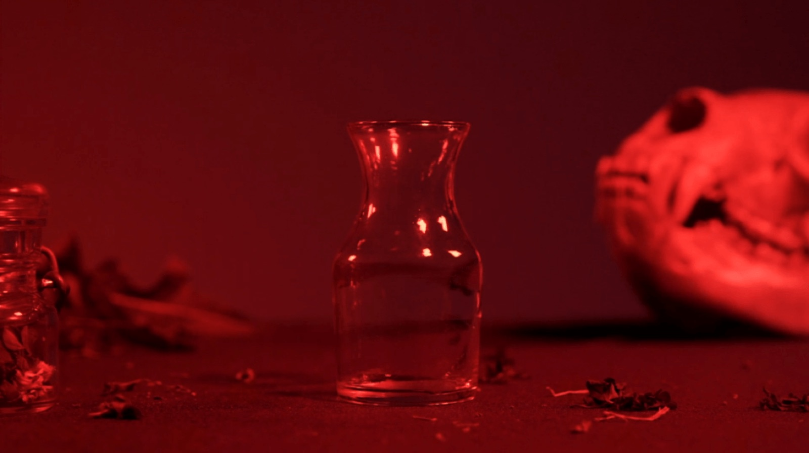
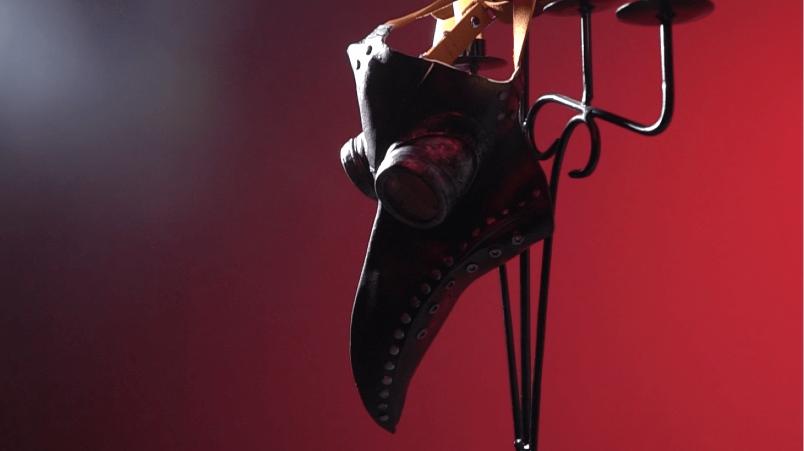
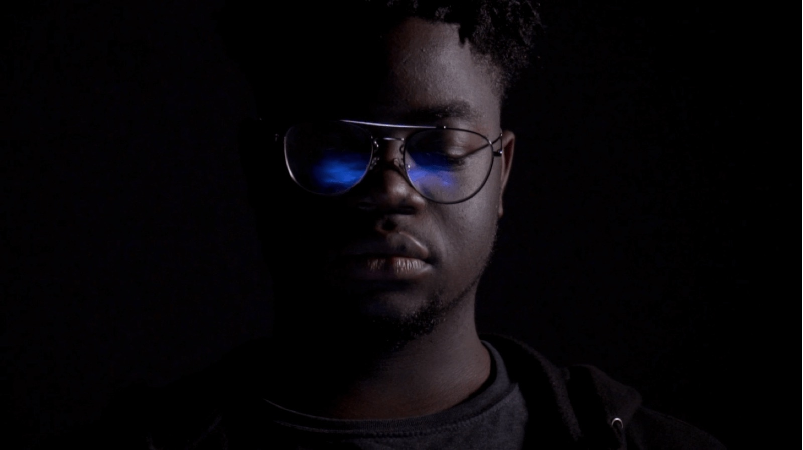
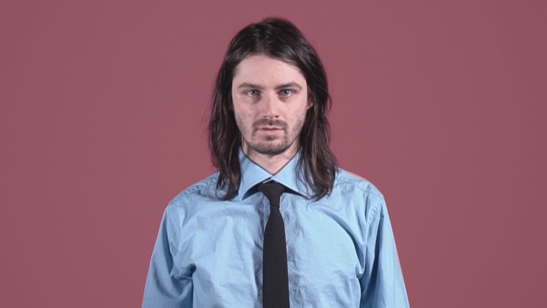

Cliquer pour regarder
Vidéographie
(17/22)
Les effets de l'isolement sur un être humain, poussé à l'extrême.
Le court métrage Il montre les effets de l'isolement lorsqu'il est poussé à l'extrême. Il a remporté le prix coup de cœur au concours d'essai audiovisuel, en mai 2022 au Centre de la nature.
(Processus)
Comment la musique du film a changé en cours de route.
J'ai fait la direction photo et le montage dans DaVinci Resolve.

Au départ, la bande sonore exprimait une colère intérieure, intense.
L'équipe a finalement choisi une musique simple, calme et sinistre, composée dans FL Studio, pour mieux faire sentir la solitude du personnage.


Images4 photos
